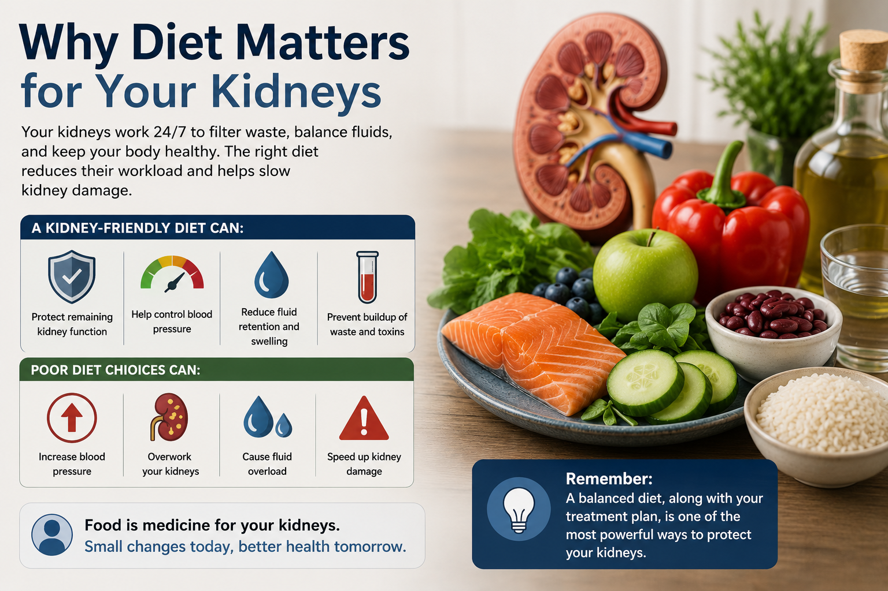
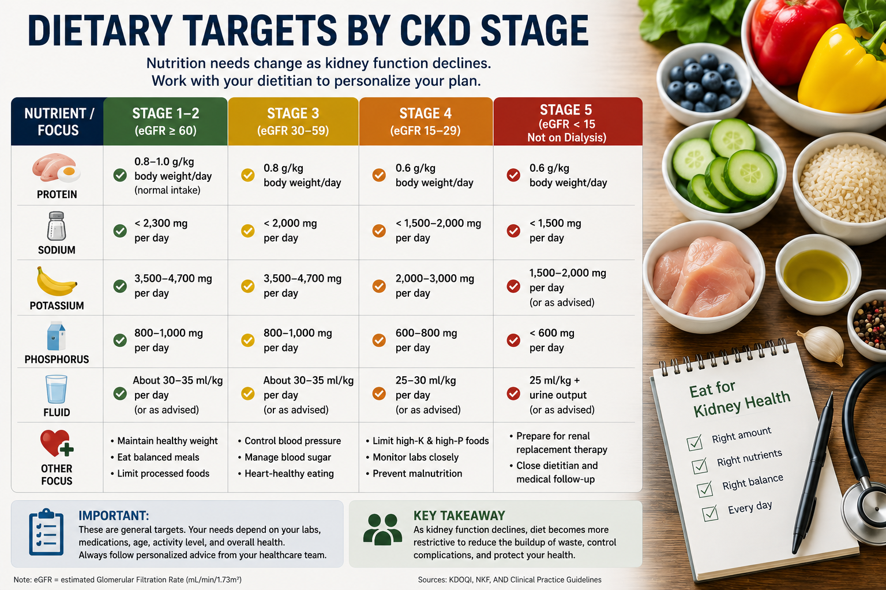
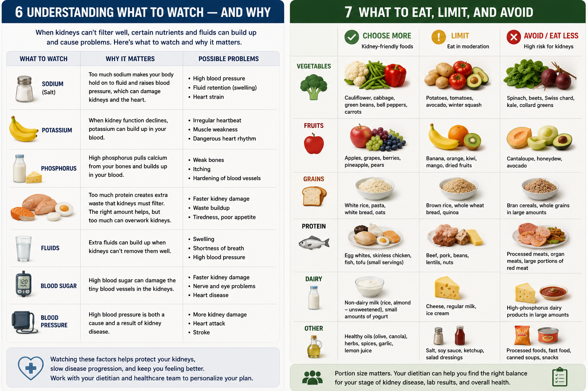
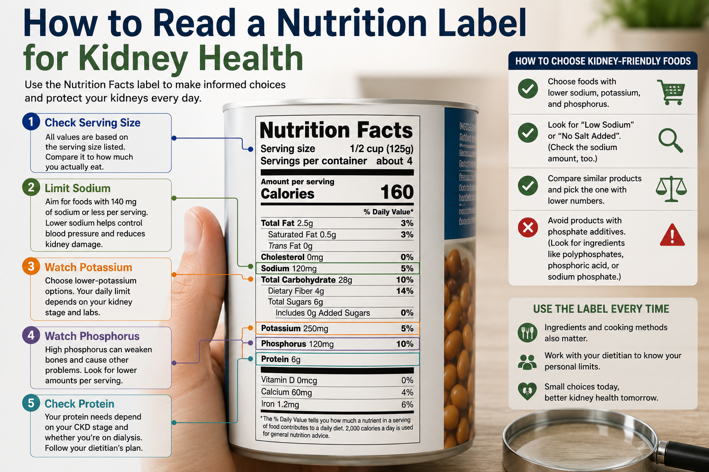

Why Diet Matters for Your KidneysBakit Mahalaga ang Diyeta para sa Inyong mga BatoNgano Importante ang Diyeta para sa Inyong mga Kidney Bakit Importante ing Diyeta para king Inyu deng Batu

An infographic explaining why diet matters for your kidneys, showing how kidney-friendly eating protects kidney function, controls blood pressure, reduces fluid retention, and prevents waste buildup, while poor food choices speed up kidney damage.
Dietary restrictions become progressively stricter as CKD advances. Importantly, dialysis patients actually INCREASE protein intake — the opposite of pre-dialysis. Never apply dialysis-level restrictions to early CKD patients.Ang mga paghihigpit sa diyeta ay nagiging mas mahigpit habang umuunlad ang CKD. Mahalagang tandaan na ang mga pasyenteng nasa dialysis ay talagang NAGPAPATAAS ng pagsipsip ng protina — kabaligtaran ng pre-dialysis. Huwag kailanman ilapat ang mga paghihigpit na antas ng dialysis sa mga pasyenteng maagang CKD.Ang mga paghigpit sa diyeta nagkalisod habang nagaabante ang CKD. Importante nga hinumdoman nga ang mga pasyente sa dialysis nagDADAKO sa pagsuyop sa protina — kabaligtaran sa pre-dialysis. Ayaw gayod iapply ang mga paghigpit nga antas sa dialysis sa mga pasyente nga sayo pa ang CKD. Ing deng paghihigpit king diyeta ya nagiging mas mahigpit habang umuunlad ing CKD. Mahalagang tandaan a ing deng pasyenteng nasa dialysis ya talagang NAGPAPATAAS ning pagsipsip ning protina — kabaligtaran ning pre-dialysis. Eka kailanman ilapat ing deng paghihigpit a antas ning dialysis king deng pasyenteng maagang CKD.
What you eat directly affects how fast your kidney disease progresses. Excess protein increases glomerular pressure. High sodium raises blood pressure and worsens proteinuria. Phosphorus and potassium build up when kidneys cannot clear them — damaging bones and the heart. The right diet is not a restriction — it is active treatment.Ang inyong kinakain ay direktang nakakaapekto sa kung gaano kabilis umuunlad ang inyong sakit sa bato. Ang sobrang protina ay nagpapataas ng presyur ng glomerular. Ang mataas na sodium ay nagpapataas ng presyon ng dugo at nagpapalala ng proteinuria. Ang phosphorus at potassium ay nag-iipon kapag hindi na maalis ng mga bato — nasisira ang mga buto at puso. Ang tamang diyeta ay hindi isang paghihigpit — ito ay aktibong paggamot.Ang inyong gikaon direkta nga nakaapekto sa kung pila ka dali nagaabante ang inyong sakit sa kidney. Ang sobrang protina nagpataas sa presyur sa glomerular. Ang taas nga sodium nagpataas sa presyon sa dugo ug nagpalala sa proteinuria. Ang phosphorus ug potassium nag-ipon kung dili na matanggal sa mga kidney — nakahalit sa mga bukog ug puso. Ang sakto nga diyeta dili paghigpit — kini aktibong paggamot. Ing inyu kinakain ya direktang nakakaapekto king nung gaano kabilis umuunlad ing inyu sakit king batu. Ing sobrang protina ya nagpapataas ning presyur ning glomerular. Ing matas a sodium ya nagpapataas ning presyon ning daya at nagpapalala ning proteinuria. Ing phosphorus at potassium ya nag-iipon nung ali a maalis ning deng batu — nasisira ing deng buto at pusu. Ing tamang diyeta ya ali metung a paghihigpit — ini ya aktibong paggamut.
Renal nutrition is highly individualized — what is right for a Stage 2 CKD patient is very different from what a dialysis patient needs. This guide covers general principles and then breaks down recommendations by stage. Always confirm specifics with your nephrologist or renal dietitian.Ang renal nutrition ay lubos na indibidwal — ang naaangkop para sa isang pasyenteng Stage 2 CKD ay napaka-iba sa pangangailangan ng isang pasyenteng nasa dialysis. Sinasaklaw ng gabay na ito ang mga pangkalahatang prinsipyo at pagkatapos ay ibinabasag ang mga rekomendasyon ayon sa yugto. Laging kumpirmahin ang mga detalye sa inyong nephrologist o renal dietitian.Ang renal nutrition hilabihan ka-indibidwal — ang sakto para sa usa ka pasyente sa Stage 2 CKD lahi kaayo sa gikinahanglan sa usa ka pasyente sa dialysis. Ang gabay nga kini naglangkob sa mga pangkalahatang prinsipyo ug dayon nagbahin sa mga rekomendasyon sumala sa yugto. Kanunay kumpirmahin ang mga detalye sa inyong nephrologist o renal dietitian. Ing renal nutrition ya lubos a indibidwal — ing naaangkop para king metung a pasyenteng Stage 2 CKD ya napaka-iba king pangangailangan ning metung a pasyenteng nasa dialysis. Sinasaklaw ning gabay a ini ing deng pangkalahatang prinsipyo at kapabanuan ya ibinabasag ing deng rekomendasyon ayon king yugto. Pirming kumpirmahin ing deng detalye king inyu nephrologist o renal dietitian.
Diet slows CKD progressionAng diyeta ay nagpapabagal ng pag-unlad ng CKDAng diyeta nagpapabagal sa pag-abante sa CKD Ing diyeta ya nagpapabagal ning pag-unlad ning CKD
A low-protein diet (0.6–0.8 g/kg/day) in pre-dialysis CKD reduces hyperfiltration stress on surviving nephrons, decreases proteinuria, and lowers uremic toxin production. Studies show it can delay dialysis initiation by months to years.Ang isang low-protein diet (0.6–0.8 g/kg/araw) sa pre-dialysis CKD ay nagpapababa ng hyperfiltration stress sa mga nakaligtas na nephron, nagpapababa ng proteinuria, at nagpapababa ng produksyon ng uremic toxin. Nagpapakita ang mga pag-aaral na maaari nitong mapaliban ang pagsisimula ng dialysis ng mga buwan hanggang taon.Ang usa ka low-protein diet (0.6–0.8 g/kg/adlaw) sa pre-dialysis CKD nagkunhod sa hyperfiltration stress sa mga nabuhi nga nephron, nagkunhod sa proteinuria, ug nagkunhod sa produksyon sa uremic toxin. Ang mga pagtuon nagpakita nga kini makapagpalangan sa pagsugod sa dialysis og mga bulan hangtod tuig. Ing metung a low-protein diet (0.6–0.8 g/kg/aldo) king pre-dialysis CKD ya nagpapababa ning hyperfiltration stress king deng nakaligtas a nephron, nagpapababa ning proteinuria, at nagpapababa ning produksyon ning uremic toxin. Nagpapakita ing deng pag-aaral a maaari nitong mapaliban ing pagsisimula ning dialysis ning deng bulan anggang banua.
Malnutrition is a real dangerAng malnutrisyon ay isang tunay na panganibAng malnutrisyon usa ka tinuod nga peligro Ing malnutrisyon ya metung a tunay a panganib
Under-eating is as dangerous as over-eating in CKD. Protein-energy wasting (PEW) — muscle loss due to inadequate calories and protein — dramatically worsens outcomes. Do not restrict too aggressively without professional guidance.Ang pagkain nang kulang ay kasing-panganib ng pagkain nang labis sa CKD. Ang protein-energy wasting (PEW) — pagkawala ng kalamnan dahil sa hindi sapat na calories at protina — ay dramatikong nagpapalala ng mga resulta. Huwag mag-restrict nang masyadong agresibo nang walang gabay ng propesyonal.Ang pagkaon nang kulang kasingdelikado sa pagkaon nang sobra sa CKD. Ang protein-energy wasting (PEW) — pagkawala sa kalamnan tungod sa dili sapat nga calories ug protina — dramatiko nga nagpalala sa mga resulta. Ayaw mag-restrict nang hilabihan nga agresibo nga walay gabay sa propesyonal. Ing pamangan nang kulang ya kasing-panganib ning pamangan nang labis king CKD. Ing protein-energy wasting (PEW) — pagkaala ning kalamnan dahil king ali sapat a calories at protina — ya dramatikong nagpapalala ning deng resulta. Eka mag-restrict nang masyadong agresibo nang alang gabay ning propesyonal.
Dietary Targets by CKD StageMga Target sa Diyeta Ayon sa Yugto ng CKDMga Target sa Diyeta Sumala sa Yugto sa CKD Deng Target king Diyeta Ayon king Yugto ning CKD
Your nutritional needs change as CKD progresses. The table below outlines how key dietary targets shift across stages.Ang inyong mga pangangailangan sa nutrisyon ay nagbabago habang umuunlad ang CKD. Ipinapakita ng talahanayan sa ibaba kung paano nagbabago ang mga pangunahing target sa diyeta sa iba't ibang yugto.Ang inyong mga pangangailangan sa nutrisyon nagbabago habang nagaabante ang CKD. Gipakita sa talahanayan sa ubos kung giunsa nagbabago ang mga panguna nga target sa diyeta sa lain-laing yugto. Ing inyu deng pangangailangan king nutrisyon ya nagbabago habang umuunlad ing CKD. Ipinapakita ning talahanayan king ibaba nung paano nagbabago ing deng pangunahing target king diyeta king iba't ibang yugto.
| CKD StageYugto ng CKDYugto sa CKD Yugto ning CKD | ProteinProtinaProtina Protina | SodiumSodiumSodium Sodium | PotassiumPotassiumPotassium Potassium | PhosphorusPhosphorusPhosphorus Phosphorus | FluidsLikidoLikido Likido |
|---|---|---|---|---|---|
| Stage 1–2 (eGFR >60)Yugto 1–2 (eGFR >60)Yugto 1–2 (eGFR >60) Yugto 1–2 (eGFR >60) | 0.8 g/kg/day | <2,300 mg | Usually unrestrictedKaraniwang walang limitasyonKasagaran walay limitasyon Karaniwang alang limitasyon | Usually unrestrictedKaraniwang walang limitasyonKasagaran walay limitasyon Karaniwang alang limitasyon | 2–2.5 L/day |
| Stage 3 (eGFR 30–59)Yugto 3 (eGFR 30–59)Yugto 3 (eGFR 30–59) Yugto 3 (eGFR 30–59) | 0.6–0.8 g/kg/day | <2,000 mg | Restrict if K >5.0I-restrict kung K >5.0I-restrict kung K >5.0 I-restrict nung K >5.0 | Begin monitoring; <1,000 mgSimulan ang pagmamasid; <1,000 mgSugdan ang pagbantay; <1,000 mg Simulan ing pagmamasid; <1,000 mg | 2 L/day (or per labs)2 L/araw (o ayon sa labs)2 L/adlaw (o sumala sa labs) 2 L/aldo (o ayon king labs) |
| Stage 4 (eGFR 15–29)Yugto 4 (eGFR 15–29)Yugto 4 (eGFR 15–29) Yugto 4 (eGFR 15–29) | 0.6 g/kg/day ± ketoanalogues0.6 g/kg/araw ± ketoanalogues0.6 g/kg/adlaw ± ketoanalogues 0.6 g/kg/aldo ± ketoanalogues | <2,000 mg | <2,000 mg | 800–1,000 mg; may need binders800–1,000 mg; maaaring kailanganin ang binders800–1,000 mg; tingali kinahanglan og binders 800–1,000 mg; maaaring kailanganin ing binders | Per urine outputAyon sa dami ng ihiSumala sa gidaghanon sa ihi Ayon king dami ning ihi |
| Stage 5 on HDYugto 5 sa HDYugto 5 sa HD Yugto 5 king HD | 1.0–1.4 g/kg/day | <2,000 mg | <2,000 mg | 800–1,000 mg; take binders with meals800–1,000 mg; uminom ng binders kasabay ng pagkain800–1,000 mg; inom og binders uban sa pagkaon 800–1,000 mg; uminom ning binders kasabay ning pamangan | Urine output + 500 mLDami ng ihi + 500 mLGidaghanon sa ihi + 500 mL Dami ning ihi + 500 mL |
| Stage 5 on PDYugto 5 sa PDYugto 5 sa PD Yugto 5 king PD | 1.2–1.5 g/kg/day | <2,000 mg | Less restricted than HDMas kaunting limitasyon kaysa HDDiyutay nga limitasyon kaysa HD Mas kaunting limitasyon kaysa HD | 800–1,000 mg | Per residual urine outputAyon sa natitirang dami ng ihiSumala sa nahabilin nga gidaghanon sa ihi Ayon king natitirang dami ning ihi |
On dialysis — protein needs INCREASE, not decreaseSa dialysis — ang pangangailangan ng protina ay TUMATAAS, hindi bumababaSa dialysis — ang pangangailangan sa protina NAGDAKO, dili nagkunhod King dialysis — ing pangangailangan ning protina ya TUMATAAS, ali bumababa
Many patients assume they should eat less protein once on dialysis. The opposite is true. Each hemodialysis session removes amino acids along with waste products. Dialysis patients need 1.0–1.4 g/kg/day of high-quality protein to prevent dangerous muscle wasting (protein-energy wasting). Low albumin on dialysis significantly increases mortality.Maraming pasyente ang nag-aakala na dapat kumain ng mas kaunting protina kapag nasa dialysis na. Ang kabaligtaran ang totoo. Bawat sesyon ng hemodialysis ay nag-aalis ng mga amino acid kasabay ng mga basura. Ang mga pasyenteng nasa dialysis ay nangangailangan ng 1.0–1.4 g/kg/araw ng mataas na kalidad na protina upang maiwasan ang mapanganib na pagkawala ng kalamnan (protein-energy wasting). Ang mababang albumin sa dialysis ay lubos na nagpapataas ng dami ng pagkamatay.Daghang pasyente naghunahuna nga kinahanglan nila mokaon og mas kaunti nga protina kung naa na sila sa dialysis. Ang kabaligtaran ang tinuod. Matag sesyon sa hemodialysis nagkuha og mga amino acid uban sa mga basura. Ang mga pasyente sa dialysis kinahanglan og 1.0–1.4 g/kg/adlaw nga taas nga kalidad nga protina aron mapugngan ang delikadong pagkawala sa kalamnan (protein-energy wasting). Ang ubos nga albumin sa dialysis labaw nga nagpataas sa mortalidad. Dacal a pasyente ing nag-aakala a dapat mangan ning mas kaunting protina nung nasa dialysis a. Ing kabaligtaran ing totoo. Bawat sesyon ning hemodialysis ya nag-aalis ning deng amino acid kasabay ning deng basura. Ing deng pasyenteng nasa dialysis ya nangangailangan ning 1.0–1.4 g/kg/aldo ning matas a kalidad a protina upang maiwasan ing mapanganib a pagkaala ning kalamnan (protein-energy wasting). Ing mababang albumin king dialysis ya lubos a nagpapataas ning dami ning pagkamatay.

A color-coded table showing daily targets for protein, sodium, potassium, phosphorus, and fluid at each chronic kidney disease stage — Stages 1 to 2, Stage 3, Stage 4, and Stage 5 not on dialysis — so you can see how your dietary goals change as the disease progresses.
Understanding What to Watch — and WhyPag-unawa sa Kung Ano ang Dapat Bantayan — at BakitPag-ila sa Kung Unsa ang Dapat Bantayan — ug Ngano Pag-unawa king Nung Ano ing Dapat Bantayan — at Bakit
What to Eat, Limit, and AvoidAno ang Kakainin, Lilimitahan, at IiwasanUnsa ang Kaonon, Limitahan, ug Likayan Ano ing Kakainin, Lilimitahan, at Iiwasan
This guide is calibrated for the Filipino diet — using foods available in local markets (palengke), grocery stores, and carinderia. Restrictions depend on your stage and lab results — confirm with your doctor.Ang gabay na ito ay inangkop para sa diyeta ng mga Pilipino — gumagamit ng mga pagkain na makukuha sa mga lokal na pamilihan (palengke), grocery, at carinderia. Ang mga paghihigpit ay nakasalalay sa inyong yugto at mga resulta ng lab — kumpirmahin sa inyong doktor.Ang gabay nga kini gi-calibrate para sa diyeta sa mga Pilipino — naggamit sa mga pagkaon nga makita sa mga lokal nga merkado (palengke), grocery, ug carinderia. Ang mga paghigpit nagdepende sa inyong yugto ug mga resulta sa lab — kumpirmahin sa inyong doktor. Ing gabay a ini ya inangkop para king diyeta ning deng Pilipino — gumagamit ning deng pamangan a makukuha king deng lokal a pamilihan (palengke), grocery, at carinderia. Ing deng paghihigpit ya nakasalalay king inyu yugto at deng resulta ning lab — kumpirmahin king inyu doktor.
Eat freely — kidney-safe choicesKumain nang malaya — mga ligtas sa batoKaon nga walay kabalaka — luwas sa kidney Mangan nang malaya — deng ligtas king batu
- White rice, puti na tinapay, pasta, bihon, sotanghonPuting kanin, puting tinapay, pasta, bihon, sotanghonPuting bugas, putik nga tinapay, pasta, bihon, sotanghon Puting kanin, puting tinapay, pasta, bihon, sotanghon
- Egg whites (itlog puti — very low phosphorus)Puting itlog (itlog puti — napakababang phosphorus)Puting itlog (itlog puti — kaayo ubos nga phosphorus) Puting itlog (itlog puti — napakababang phosphorus)
- Bangus, tilapia, galunggong (moderate portions)Bangus, tilapia, galunggong (katamtamang dami)Bangus, tilapia, galunggong (katamtamang bahin) Bangus, tilapia, galunggong (katamtamang dami)
- Chicken breast (without skin)Dibdib ng manok (walang balat)Dughan sa manok (walay panit) Dibdib ning manok (alang balat)
- Cabbage (repolyo), green beans (sitaw), pechayRepolyo, sitaw, pechayRepolyo, sitaw, pechay Repolyo, sitaw, pechay
- Sayote (chayote) — low potassium and phosphorusSayote — mababang potassium at phosphorusSayote — ubos nga potassium ug phosphorus Sayote — mababang potassium at phosphorus
- Upo, patola, ampalaya (bitter melon)Upo, patola, ampalayaUpo, patola, ampalaya Upo, patola, ampalaya
- Apple, grapes, pineapple, canned pears (in juice, drained)Mansanas, ubas, pinya, de-latang peras (sa juice, pinatuyo)Mansanas, ubas, pinya, de-latang peras (sa juice, gipauga) Mansanas, ubas, pinya, de-latang peras (king juice, pinatuyo)
- Corn, unsalted crackers, rice cakes (puto, suman without salt)Mais, crackers na walang asin, kakanin (puto, suman na walang asin)Mais, crackers nga walay asin, kakanin (puto, suman nga walay asin) Mais, crackers a alang asin, kakanin (puto, suman a alang asin)
- Water, unsweetened calamansi juice, barley waterTubig, calamansi juice na walang asukal, barley waterTubig, calamansi juice nga walay asukar, barley water Danum, calamansi juice a alang asukal, barley water
Limit — eat small portions onlyLimitahan — maliit na dami lamangLimitahan — gagmay nga bahin lamang Limitahan — maliit a dami lamang
- Red meat (beef, pork) — maximum 1 palm-sized serving/dayPulang karne (baka, baboy) — maximum 1 serving na sukat ng palad/arawPula nga karne (baka, baboy) — maximum 1 serving nga sukat sa palad/adlaw Pulang karne (baka, baboy) — maximum 1 serving a sukat ning palad/aldo
- Kamote (sweet potato) — leach before cookingKamote — ibabad muna bago lutuinKamote — ibabad una sa tubig sa wala pa lutoa Kamote — ibabad muna bago lutuin
- Kangkong, malunggay — boil and discard waterKangkong, malunggay — pakuluan at itapon ang tubigKangkong, malunggay — pakuluan ug itambog ang tubig Kangkong, malunggay — pakuluan at itapon ing danum
- Saging (banana) — 1 small piece if K is controlledSaging — 1 maliit na piraso kung kontrolado ang KSaging — 1 gamay nga piraso kung kontrolado ang K Saging — 1 maliit a piraso nung kontrolado ing K
- Papaya, melon (limited — moderate K)Papaya, melon (limitahan — katamtamang K)Papaya, melon (limitahan — katamtamang K) Papaya, melon (limitahan — katamtamang K)
- Whole eggs (yolk has high phosphorus)Buong itlog (ang pula ay may mataas na phosphorus)Tibuok itlog (ang pula may taas nga phosphorus) Buong itlog (ing pula ya atin matas a phosphorus)
- Brown rice (higher phosphorus than white)Brown rice (mas mataas ang phosphorus kaysa puting kanin)Brown rice (mas taas ang phosphorus kaysa puting bugas) Brown rice (mas matas ing phosphorus kaysa puting kanin)
- Mongo (mung beans) — small portions, well-cookedMongo — maliit na dami, lutuing mabutiMongo — gagmay nga bahin, lutoa pag-ayo Mongo — maliit a dami, lutuing mabuti
- Low-sodium soy sauce (use sparingly)Low-sodium na toyo (gamitin nang katipid)Low-sodium nga toyo (gamiton og diyutay) Low-sodium a toyo (gamitin nang katipid)
Avoid — high risk foodsIwasan — mga pagkain na may mataas na panganibLikayi — mga pagkaon nga taas ang peligro Iwasan — deng pamangan a atin matas a panganib
- Organ meats: liver, kidney, brain, goto, dinuguanLamang-loob: atay, bato, utak, goto, dinuguanSulod-sulod: atay, kidney, utok, goto, dinuguan Lamang-loob: atay, batu, utak, goto, dinuguan
- Bagoong, patis, toyo (fish/soy sauce) in large amountsBagoong, patis, toyo sa malaking damiBagoong, patis, toyo sa dako nga dami Bagoong, patis, toyo king malaking dami
- Instant noodles (Lucky Me, Nissin — very high sodium)Instant noodles (Lucky Me, Nissin — napakataas na sodium)Instant noodles (Lucky Me, Nissin — kaayo taas nga sodium) Instant noodles (Lucky Me, Nissin — napakataas a sodium)
- Coconut water (buko juice — very high potassium)Tubig ng buko (buko juice — napakataas na potassium)Tubig sa buko (buko juice — kaayo taas nga potassium) Danum ning buko (buko juice — napakataas a potassium)
- Avocado (high potassium)Avocado (mataas na potassium)Avocado (taas nga potassium) Avocado (matas a potassium)
- Processed meats: longganisa, tocino, hotdog, SPAMMga processed na karne: longganisa, tocino, hotdog, SPAMMga processed nga karne: longganisa, tocino, hotdog, SPAM Deng processed a karne: longganisa, tocino, hotdog, SPAM
- Dark colas (Coke, Pepsi — high phosphorus additives)Maitim na cola (Coke, Pepsi — mataas na phosphorus additives)Ngitngit nga cola (Coke, Pepsi — taas nga phosphorus additives) Maitim a cola (Coke, Pepsi — matas a phosphorus additives)
- Nuts, peanut butter (high phosphorus and potassium)Mani, peanut butter (mataas na phosphorus at potassium)Mani, peanut butter (taas nga phosphorus ug potassium) Mani, peanut butter (matas a phosphorus at potassium)
- Squash/kalabasa (high potassium)Kalabasa (mataas na potassium)Kalabasa (taas nga potassium) Kalabasa (matas a potassium)
- Salt substitutes (contain potassium chloride — dangerous)Mga kapalit ng asin (naglalaman ng potassium chloride — mapanganib)Mga kapalit sa asin (adunay potassium chloride — delikado) Deng kapalit ning asin (naglalaman ning potassium chloride — mapanganib)
Kidney-protective foods — include regularlyMga pagkain na nagpoprotekta sa bato — isama sa regularMga pagkaon nga nagprotekta sa kidney — iapil sa regular Deng pamangan a nagpoprotekta king batu — isama king regular
- Ampalaya (bitter melon) — low K/P, anti-inflammatoryAmpalaya — mababang K/P, anti-inflammatoryAmpalaya — ubos nga K/P, anti-inflammatory Ampalaya — mababang K/P, anti-inflammatory
- Sayote — low calorie, low K/P, high fiberSayote — mababang calories, mababang K/P, mataas na fiberSayote — ubos nga calories, ubos nga K/P, taas nga fiber Sayote — mababang calories, mababang K/P, matas a fiber
- Calamansi — Vitamin C helps iron absorption; low KCalamansi — Vitamin C nakatulong sa pagsipsip ng bakal; mababang KCalamansi — Vitamin C nagtabang sa pagsuyop sa iron; ubos nga K Calamansi — Vitamin C nakatulong king pagsipsip ning bakal; mababang K
- Ginger and garlic for flavor (replaces salt)Luya at bawang para sa lasa (kapalit ng asin)Luya ug bawang para sa lami (kapalit sa asin) Luya at bawang para king lasa (kapalit ning asin)
- Olive oil or canola oil (heart-protective, no K/P)Olive oil o canola oil (nagpoprotekta sa puso, walang K/P)Olive oil o canola oil (nagprotekta sa puso, walay K/P) Olive oil o canola oil (nagpoprotekta king pusu, alang K/P)
- Egg whites — highest quality protein, minimal phosphorusPuting itlog — pinakamataas na kalidad na protina, minimal na phosphorusPuting itlog — pinakataas nga kalidad nga protina, minimal nga phosphorus Puting itlog — pinakamatas a kalidad a protina, minimal a phosphorus
- Low-fat yogurt (if K is controlled) — supports gut-kidney axisLow-fat na yogurt (kung kontrolado ang K) — sumusuporta sa gut-kidney axisLow-fat nga yogurt (kung kontrolado ang K) — nagsuporta sa gut-kidney axis Low-fat a yogurt (nung kontrolado ing K) — sumusuporta king gut-kidney axis

A two-part guide: the left side lists six nutrients to watch — sodium, potassium, phosphorus, protein, fluids, and blood sugar or blood pressure — and why each matters, while the right side sorts everyday foods into choose-more, limit, and avoid groups across vegetables, fruits, grains, protein, dairy, and other categories.
A Day of Eating Well with CKD (Pre-Dialysis, Stage 3)Isang Araw ng Maayos na Pagkain na may CKD (Pre-Dialysis, Yugto 3)Usa ka Adlaw nga Maayos nga Pagkaon nga adunay CKD (Pre-Dialysis, Yugto 3) Metung a Aldo ning Maayos a Pamangan a atin CKD (Pre-Dialysis, Yugto 3)
Based on a 60 kg patient targeting 0.7 g/kg protein, <2,000 mg sodium, and approximately 1,800 kcal/day. Adjust portions to your actual weight and lab results.Batay sa isang pasyenteng 60 kg na nagta-target ng 0.7 g/kg protina, <2,000 mg sodium, at humigit-kumulang 1,800 kcal/araw. I-adjust ang mga dami ayon sa inyong tunay na timbang at mga resulta ng lab.Batay sa usa ka pasyente nga 60 kg nga nagtarget og 0.7 g/kg protina, <2,000 mg sodium, ug mga 1,800 kcal/adlaw. I-adjust ang mga bahin sumala sa inyong tinuod nga timbang ug mga resulta sa lab. Batay king metung a pasyenteng 60 kg a nagta-target ning 0.7 g/kg protina, <2,000 mg sodium, at humigit-kumulang 1,800 kcal/aldo. I-adjust ing deng dami ayon king inyu tunay a timbang at deng resulta ning lab.
Tagalog-style dayIsang araw sa estilo ng TagalogUsa ka adlaw sa estilo sa Tagalog Metung a aldo king estilo ning Tagalog
Budget-friendly day (approx. ₱150–200)Araw na matipid sa badyet (mga ₱150–200)Adlaw nga tipid sa budget (mga ₱150–200) Aldo a matipid king badyet (deng ₱150–200)
If you are on hemodialysis, this meal plan changes significantlyKung nasa hemodialysis kayo, ang meal plan na ito ay malaki ang pagbabagoKung naa kamo sa hemodialysis, ang meal plan nga kini dako ang pagbabago Nung nasa hemodialysis kayu, ing meal plan a ini ya malaki ing pagbabago
Dialysis patients need more protein (1.0–1.4 g/kg/day) and must be stricter with potassium and fluids. The portions of fish and chicken above should be increased, and coconut water, banana, and squash must be strictly avoided. Ask your dialysis nurse or dietitian for an HD-specific meal plan.Ang mga pasyenteng nasa dialysis ay nangangailangan ng mas maraming protina (1.0–1.4 g/kg/araw) at dapat mas mahigpit sa potassium at likido. Ang mga dami ng isda at manok sa itaas ay dapat dagdagan, at ang tubig ng buko, saging, at kalabasa ay dapat mahigpit na iwasan. Humingi sa inyong dialysis nurse o dietitian ng meal plan na partikular para sa HD.Ang mga pasyente sa dialysis kinahanglan og mas daghang protina (1.0–1.4 g/kg/adlaw) ug kinahanglan mas mahigpit sa potassium ug likido. Ang mga bahin sa isda ug manok sa ibabaw kinahanglan dagdagon, ug ang tubig sa buko, saging, ug kalabasa kinahanglan mahigpit nga likayon. Pangayo sa inyong dialysis nurse o dietitian og meal plan nga espesipiko para sa HD. Ing deng pasyenteng nasa dialysis ya nangangailangan ning mas dacal a protina (1.0–1.4 g/kg/aldo) at dapat mas mahigpit king potassium at likido. Ing deng dami ning isda at manok king itaas ya dapat dagdagan, at ing danum ning buko, saging, at kalabasa ya dapat mahigpit a iwasan. Humingi king inyu dialysis nurse o dietitian ning meal plan a partikular para king HD.
How to Read a Nutrition Label for Kidney HealthPaano Magbasa ng Nutrition Label para sa Kalusugan ng BatoGiunsa Pagbasa ang Nutrition Label para sa Kahimsog sa Kidney Paano Magbasa ning Nutrition Label para king Kalusugan ning Batu

An annotated Nutrition Facts label that points out serving size, sodium, potassium, phosphorus, and protein, paired with a simple checklist for choosing kidney-friendly packaged foods at the store.
Check sodium firstTingnan muna ang sodiumTan-awa una ang sodium Tingnan muna ing sodium
Look at "Sodium" per serving. Anything above 400 mg per serving is high. Watch for multiple servings per pack — multiply the sodium by the number of servings you eat. Target <600 mg sodium per meal.Tingnan ang "Sodium" bawat serving. Ang anumang higit sa 400 mg bawat serving ay mataas. Bantayan ang maramihang serving bawat pack — i-multiply ang sodium sa bilang ng serving na kinakain ninyo. Target na <600 mg sodium bawat kain.Tan-awa ang "Sodium" matag serving. Ang bisan unsa nga labaw sa 400 mg matag serving taas na. Bantayan ang daghang serving matag pack — i-multiply ang sodium sa gidaghanon sa serving nga gikaon ninyo. Target nga <600 mg sodium matag kain. Tingnan ing "Sodium" bawat serving. Ing anumang higit king 400 mg bawat serving ya matas. Bantayan ing maramihang serving bawat pack — i-multiply ing sodium king bilang ning serving a kinakain ninyo. Target a <600 mg sodium bawat kain.
Phosphorus additivesMga additives na may phosphorusMga additives nga adunay phosphorus Deng additives a atin phosphorus
Inorganic phosphorus (from additives) is absorbed 90–100% vs. 40–60% from natural foods. Look for ingredients ending in "-phosphate": calcium phosphate, sodium phosphate, disodium phosphate. These are in canned goods, processed cheese, instant noodles, and dark colas.Ang inorganic phosphorus (mula sa mga additives) ay nasasipsip nang 90–100% kumpara sa 40–60% mula sa natural na pagkain. Hanapin ang mga sangkap na nagtatapos sa "-phosphate": calcium phosphate, sodium phosphate, disodium phosphate. Makikita ang mga ito sa mga de-lata, processed cheese, instant noodles, at maitim na cola.Ang inorganic phosphorus (gikan sa mga additives) nasuyop og 90–100% kumpara sa 40–60% gikan sa natural nga pagkaon. Pangitaa ang mga sangkap nga natapos sa "-phosphate": calcium phosphate, sodium phosphate, disodium phosphate. Makita kini sa mga de-lata, processed cheese, instant noodles, ug ngitngit nga cola. Ing inorganic phosphorus (mula king deng additives) ya nasasipsip nang 90–100% kumpara king 40–60% mula king natural a pamangan. Hanapin ing deng sangkap a nagtatapos king "-phosphate": calcium phosphate, sodium phosphate, disodium phosphate. Makikita ing deng ini king deng de-lata, processed cheese, instant noodles, at maitim a cola.
Potassium on labelsPotassium sa mga labelPotassium sa mga label Potassium king deng label
Philippine food labels do not always list potassium. For packaged foods, look for "potassium chloride" in the ingredients — this is used as a salt substitute and is very high in potassium. Avoid it entirely.Ang mga food label sa Pilipinas ay hindi laging naglilista ng potassium. Para sa mga nakapaketeng pagkain, hanapin ang "potassium chloride" sa mga sangkap — ito ay ginagamit bilang kapalit ng asin at napakataas ng potassium. Iwasan ito nang buo-buo.Ang mga food label sa Pilipinas dili kanunay naglista sa potassium. Para sa mga nakabalot nga pagkaon, pangitaa ang "potassium chloride" sa mga sangkap — kini gigamit isip kapalit sa asin ug kaayo taas ang potassium. Likayon kini sa hingpit. Ing deng food label king Pilipinas ya ali pirming naglilista ning potassium. Para king deng nakapaketeng pamangan, hanapin ing "potassium chloride" king deng sangkap — ini ya ginagamit bilang kapalit ning asin at napakataas ning potassium. Iwasan ini nang buo-buo.
How to Leach Vegetables to Reduce PotassiumPaano Mag-leach ng mga Gulay upang Mabawasan ang PotassiumGiunsa Pag-leach ang mga Utanon aron Mabawasan ang Potassium Paano Mag-leach ning deng Gulay upang Mabawasan ing Potassium
Leaching removes 30–50% of the potassium from most vegetables — making some higher-potassium vegetables safer to eat in small amounts.Ang pag-leach ay nag-aalis ng 30–50% ng potassium mula sa karamihan ng mga gulay — na nagpapadali sa pagkain ng ilang gulay na may mas mataas na potassium sa maliliit na dami.Ang pag-leach nagkuha og 30–50% sa potassium gikan sa kadaghanan sa mga utanon — nga naghimo sa pipila ka utanon nga taas ang potassium nga mas luwas kaonon sa gagmay nga bahin. Ing pag-leach ya nag-aalis ning 30–50% ning potassium mula king kadaklan ning deng gulay — a nagpapadali king pamangan ning ilang gulay a atin mas matas a potassium king maliliit a dami.
Step-by-step leaching methodHakbang-hakbang na pamamaraan ng pag-leachLakang-lakang nga pamaagi sa pag-leach Hakbang-hakbang a pamamaraan ning pag-leach
- Step 1:Hakbang 1:Lakang 1: Hakbang 1: Peel and cut vegetables into small, thin pieces — more surface area means more potassium releasedBalatan at hiwain ang mga gulay sa maliliit, manipis na piraso — mas malaking surface area ay nangangahulugang mas maraming potassium ang mailalabasBalikason ug putlon ang mga utanon sa gagmay, manipis nga piraso — mas dako nga surface area nagpasabot nga mas daghang potassium ang mapagawas Balatan at hiwain ing deng gulay king maliliit, manipis a piraso — mas malaking surface area ya nangangahulugang mas dacal a potassium ing mailalabas
- Step 2:Hakbang 2:Lakang 2: Hakbang 2: Soak in a large amount of warm water for at least 2 hours. For best results, change the water once during soakingIbabad sa malaking dami ng maligamgam na tubig nang hindi bababa sa 2 oras. Para sa pinakamahusay na resulta, palitan ang tubig nang isang beses habang binababadIbabad sa dako nga dami nga mainit-init nga tubig og labing menos 2 ka oras. Para sa labing maayo nga resulta, ilisan ang tubig og makausa samtang gipababad Ibabad king malaking dami ning maligamgam a danum nang ali bababa king 2 oras. Para king pinakamahusay a resulta, palitan ing danum nang metung a beses habang binababad
- Step 3:Hakbang 3:Lakang 3: Hakbang 3: Drain and discard the soaking water completelySalain at itapon ang tubig na ginamit sa pagbabad nang buo-buoPun-on ug itambog ang tubig nga gigamit sa pagbabad sa hingpit Salain at itapon ing danum a ginamit king pagbabad nang buo-buo
- Step 4:Hakbang 4:Lakang 4: Hakbang 4: Boil in fresh water (at least 10 times the volume of the vegetable)Pakuluan sa sariwang tubig (hindi bababa sa 10 beses ang dami ng gulay)Pakuloa sa bag-ong tubig (labing menos 10 ka beses ang dami sa utanon) Pakuluan king sariwang danum (ali bababa king 10 beses ing dami ning gulay)
- Step 5:Hakbang 5:Lakang 5: Hakbang 5: Drain and discard the boiling water — do not use the broth for soupSalain at itapon ang tubig na ginamit sa pagpakuluan — huwag gamitin ang sabaw para sa sopasPun-on ug itambog ang tubig nga gigamit sa pagpabukal — ayaw gamiton ang sabaw para sa sopas Salain at itapon ing danum a ginamit king pagpakuluan — eka gamitin ing sabaw para king sopas
- Works best for:Pinaka-epektibo para sa:Labing epektibo para sa: Pinaka-epektibo para king: kamote, potato, pechay, kangkong, sitaw, squash (if permitted in small amounts)kamote, patatas, pechay, kangkong, sitaw, kalabasa (kung pinahihintulutan sa maliliit na dami)kamote, patatas, pechay, kangkong, sitaw, kalabasa (kung gitugutan sa gagmay nga bahin) kamote, patatas, pechay, kangkong, sitaw, kalabasa (nung pinahihintulutan king maliliit a dami)
Leaching does not eliminate potassium — it reduces itAng pag-leach ay hindi nag-aalis ng potassium — binabawasan lamang itoAng pag-leach dili nagwagtang sa potassium — nagkunhod lamang kini Ing pag-leach ya ali nag-aalis ning potassium — binabawasan lamang ini
Even after leaching, high-potassium vegetables should still be eaten in small portions. Leaching does not make them freely safe. And fruits cannot be leached — stick to low-potassium fruits (apple, grapes, pineapple, canned pears rinsed in water).Kahit pagkatapos ng pag-leach, ang mga gulay na may mataas na potassium ay dapat pa ring kainin sa maliliit na dami. Ang pag-leach ay hindi nagpapadali sa kanila nang buo-buo. At ang mga prutas ay hindi maaaring i-leach — manatili sa mga prutas na mababa ang potassium (mansanas, ubas, pinya, de-latang peras na banlawan sa tubig).Bisan human sa pag-leach, ang mga utanon nga taas ang potassium kinahanglan pa gihapon kaonon sa gagmay nga bahin. Ang pag-leach dili nagpahimo kanila nga luwas nga walay limitasyon. Ug ang mga prutas dili mapag-leach — magpadayon sa mga prutas nga ubos ang potassium (mansanas, ubas, pinya, de-latang peras nga gibanlaw sa tubig). Kahit kapabanuan ning pag-leach, ing deng gulay a atin matas a potassium ya dapat pa ring kainin king maliliit a dami. Ing pag-leach ya ali nagpapadali king kanila nang buo-buo. At ing deng prutas ya ali maaaring i-leach — manatili king deng prutas a mababa ing potassium (mansanas, ubas, pinya, de-latang peras a banlawan king danum).
Renal Nutrition Calculator — Daily Protein, K, P & Na BudgetRenal Nutrition Calculator — Araw-araw na Badyet ng Protina, K, P at NaRenal Nutrition Calculator — Adlaw-adlaw nga Budget sa Protina, K, P ug Na Renal Nutrition Calculator — Aldo-aldo a Badyet ning Protina, K, P at A
Enter your weight and CKD stage to calculate your personalized daily targets for protein, potassium, phosphorus, and sodium. These are starting points — your nephrologist or renal dietitian may adjust them based on your labs.Ilagay ang inyong timbang at yugto ng CKD upang kalkulahin ang inyong personalisadong araw-araw na mga target para sa protina, potassium, phosphorus, at sodium. Ito ay mga panimulang punto — ang inyong nephrologist o renal dietitian ay maaaring i-adjust ang mga ito batay sa inyong mga labs.Isulod ang inyong timbang ug yugto sa CKD aron kalkulahon ang inyong personalisado nga adlaw-adlaw nga mga target para sa protina, potassium, phosphorus, ug sodium. Kini mga sugod nga punto — ang inyong nephrologist o renal dietitian mahimong mag-adjust kanila base sa inyong mga labs. Ilagay ing inyu timbang at yugto ning CKD upang kalkulahin ing inyu personalisadong aldo-aldo a deng target para king protina, potassium, phosphorus, at sodium. Ini ya deng panimulang punto — ing inyu nephrologist o renal dietitian ya maaaring i-adjust ing deng ini batay king inyu deng labs.
⚕ Protein targets: CKD 3–5 pre-dialysis 0.6–0.8 g/kg/day (KDIGO 2024); HD 1.1–1.2 g/kg/day (losses during dialysis); PD 1.2–1.3 g/kg/day (higher peritoneal losses). Electrolyte limits are general guidelines — individualize based on lab results and clinical assessment. 1 tsp salt = ~2,300 mg sodium = daily limit for most CKD patients.⚕ Mga target ng protina: CKD 3–5 pre-dialysis 0.6–0.8 g/kg/araw (KDIGO 2024); HD 1.1–1.2 g/kg/araw (mga nawawala sa dialysis); PD 1.2–1.3 g/kg/araw (mas mataas na peritoneal losses). Ang mga limitasyon ng electrolyte ay pangkalahatang gabay — i-individualize batay sa mga resulta ng lab at klinikal na pagtatasa. 1 kutsarita ng asin = ~2,300 mg sodium = araw-araw na limitasyon para sa karamihan ng mga pasyenteng CKD.⚕ Mga target sa protina: CKD 3–5 pre-dialysis 0.6–0.8 g/kg/adlaw (KDIGO 2024); HD 1.1–1.2 g/kg/adlaw (mga nawala sa dialysis); PD 1.2–1.3 g/kg/adlaw (mas taas nga peritoneal losses). Ang mga limitasyon sa electrolyte pangkalahatang gabay — i-individualize base sa mga resulta sa lab ug klinikal nga pagtasa. 1 kutsarita nga asin = ~2,300 mg sodium = adlaw-adlaw nga limitasyon para sa kadaghanan sa mga pasyente sa CKD. ⚕ Deng target ning protina: CKD 3–5 pre-dialysis 0.6–0.8 g/kg/aldo (KDIGO 2024); HD 1.1–1.2 g/kg/aldo (deng nawawala king dialysis); PD 1.2–1.3 g/kg/aldo (mas matas a peritoneal losses). Ing deng limitasyon ning electrolyte ya pangkalahatang gabay — i-individualize batay king deng resulta ning lab at klinikal a pagtatasa. 1 kutsarita ning asin = ~2,300 mg sodium = aldo-aldo a limitasyon para king kadaklan ning deng pasyenteng CKD.
Everyday Tips for Eating Well with CKDMga Pang-araw-araw na Tip para sa Maayos na Pagkain na may CKDMga Adlaw-adlaw nga Tip para sa Maayos nga Pagkaon nga adunay CKD Deng Pang-aldo-aldo a Tip para king Maayos a Pamangan a atin CKD
Season without saltMag-season nang walang asinMag-season nga walay asin Mag-season nang alang asin
Use calamansi, vinegar (suka), garlic, onion, ginger, pandan, and herbs (tanglad, dahon ng laurel) to add flavor without sodium. A squeeze of calamansi replaces the need for patis in most dishes.Gumamit ng calamansi, suka, bawang, sibuyas, luya, pandan, at mga halamang gamot (tanglad, dahon ng laurel) upang magdagdag ng lasa nang walang sodium. Ang isang pisil ng calamansi ay pumapalit sa pangangailangan ng patis sa karamihan ng mga putahe.Gamita ang calamansi, suka, bawang, sibuyas, luya, pandan, ug mga halamang gamot (tanglad, dahon ng laurel) aron makadugang og lami nga walay sodium. Ang usa ka pisil sa calamansi nagpalit sa pangangailangan sa patis sa kadaghanan sa mga putahe. Gumamit ning calamansi, suka, bawang, sibuyas, luya, pandan, at deng halamang gamut (tanglad, dahon ning laurel) upang magdagdag ning lasa nang alang sodium. Ing metung a pisil ning calamansi ya pumapalit king pangangailangan ning patis king kadaklan ning deng putahe.
Choose fresh over processedPiliin ang sariwa kaysa sa processedPilia ang sariwa kaysa processed Piliin ing sariwa kaysa king processed
Fresh bangus from the palengke has far less sodium and phosphorus than canned sardines. Fresh chicken has less sodium than processed longganisa. The fresher and less processed, the better for your kidneys.Ang sariwang bangus mula sa palengke ay may mas kaunting sodium at phosphorus kaysa sa de-latang sardinas. Ang sariwang manok ay may mas kaunting sodium kaysa sa processed na longganisa. Ang mas sariwa at mas hindi processed, mas mabuti para sa inyong mga bato.Ang sariwang bangus gikan sa palengke adunay mas gamay nga sodium ug phosphorus kaysa sa de-latang sardinas. Ang sariwang manok adunay mas gamay nga sodium kaysa sa processed nga longganisa. Ang mas sariwa ug mas dili processed, mas maayo para sa inyong mga kidney. Ing sariwang bangus mula king palengke ya atin mas kaunting sodium at phosphorus kaysa king de-latang sardinas. Ing sariwang manok ya atin mas kaunting sodium kaysa king processed a longganisa. Ing mas sariwa at mas ali processed, mas mabuti para king inyu deng batu.
Eat smaller, more frequent mealsKumain ng mas maliit at mas madalasKaon og mas gamay ug mas kanunay Mangan ning mas maliit at mas madalas
Small, frequent meals (4–5 per day) are easier on the kidneys than two large meals. They also help maintain blood sugar, prevent excessive protein loading per meal, and keep energy levels stable throughout the day.Ang maliliit at madalas na kain (4–5 beses sa isang araw) ay mas magaan sa mga bato kaysa sa dalawang malalaking kain. Nakakatulong din ito sa pagpapanatili ng asukal sa dugo, pag-iwas sa labis na pagloading ng protina bawat kain, at pagpapanatili ng antas ng enerhiya sa buong araw.Ang gagmay ug kanunay nga kain (4–5 ka beses matag adlaw) mas magaan sa mga kidney kaysa sa duha ka dakong kain. Nagtabang usab kini sa pagpadayon sa asukar sa dugo, pagpugong sa sobrang protein loading matag kain, ug pagpadayon sa antas sa enerhiya sa tibuok adlaw. Ing maliliit at madalas a kain (4–5 beses king metung a aldo) ya mas magaan king deng batu kaysa king dalawang malalaking kain. Nakakatulong din ini king pagpapanatili ning asukal king daya, pag-iwas king labis a pagloading ning protina bawat kain, at pagpapanatili ning antas ning enerhiya king buong aldo.
Plan ahead for carinderiaMag-plano nang maaga para sa carinderiaMag-plano daan para sa carinderia Mag-plano nang maaga para king carinderia
When eating out, ask for your viand to be cooked without patis or toyo and served with extra rice and vegetables. Sinigang without patis, grilled fish, and steamed vegetables are generally safe choices at most Filipino restaurants.Kapag kumakain sa labas, hilingin na ang inyong ulam ay lutouin nang walang patis o toyo at ihain kasama ang karagdagang kanin at mga gulay. Ang sinigang na walang patis, inihaw na isda, at pinasingawang mga gulay ay karaniwang ligtas na pagpipilian sa karamihan ng mga Filipino na kainan.Kung mokaon sa gawas, pangayoa nga ang inyong ulam lutoon nga walay patis o toyo ug ihain uban sa dugang nga kanin ug mga utanon. Ang sinigang nga walay patis, inihaw nga isda, ug pinasingaw nga mga utanon kasagaran luwas nga pagpili sa kadaghanan sa mga Filipino nga kainan. Nung mamangan king labas, hilingin a ing inyu ulam ya lutouin nang alang patis o toyo at ihain kasama ing karagdagang kanin at deng gulay. Ing sinigang a alang patis, inihaw a isda, at pinasingawang deng gulay ya karaniwang ligtas a pagpipilian king kadaklan ning deng Filipino a kainan.
Weigh yourself dailyTimbangin ang inyong sarili araw-arawTimbanga ang inyong kaugalingon adlaw-adlaw Timbangin ing inyu sarili aldo-aldo
Daily morning weight (same scale, after toileting, before eating) tracks fluid changes. A gain of more than 0.5 kg overnight suggests excess fluid intake. Bring your weight log to every appointment.Ang araw-araw na timbang sa umaga (parehong timbangan, pagkatapos gumamit ng banyo, bago kumain) ay sinusubaybayan ang mga pagbabago ng likido. Ang pagtaas ng higit sa 0.5 kg magdamag ay nagpapahiwatig ng labis na pagsipsip ng likido. Dalhin ang inyong talaan ng timbang sa bawat appointment.Ang adlaw-adlaw nga timbang sa buntag (samang timbangan, human sa paggamit sa banyo, sa wala pa mokaon) nagsubay sa mga pagbabago sa likido. Ang pagdako og labaw sa 0.5 kg sa gabii nagsugyot og sobrang pagsuyop sa likido. Dad-on ang inyong talaan sa timbang sa matag appointment. Ing aldo-aldo a timbang king umaga (parehong timbangan, kapabanuan gumamit ning banyo, bago mangan) ya sinusubaybayan ing deng pagbabago ning likido. Ing pagtaas ning higit king 0.5 kg magdamag ya nagpapahiwatig ning labis a pagsipsip ning likido. Dalhin ing inyu talaan ning timbang king bawat appointment.
Take binders with mealsUminom ng binders kasabay ng kainInom og binders uban sa kain Uminom ning binders kasabay ning kain
Phosphate binders (calcium carbonate, sevelamer) must be taken with food — not before or after. They work by binding phosphorus in the food you are currently eating. Taking them at the wrong time makes them useless.Ang mga phosphate binder (calcium carbonate, sevelamer) ay dapat inumin kasabay ng pagkain — hindi bago o pagkatapos. Gumagana ang mga ito sa pamamagitan ng pagiging katambal ng phosphorus sa pagkain na kasalukuyan ninyong kinakain. Ang pag-inom sa maling oras ay walang silbi.Ang mga phosphate binder (calcium carbonate, sevelamer) kinahanglan inumon uban sa pagkaon — dili sa wala pa o human. Nagtrabaho kini pinaagi sa pagbugkos sa phosphorus sa pagkaon nga karon ninyong gikaon. Ang pag-inom niini sa sayop nga oras walay kapuslanan. Ing deng phosphate binder (calcium carbonate, sevelamer) ya dapat inumin kasabay ning pamangan — ali bago o kapabanuan. Gumagana ing deng ini king pamamagitan ning pagiging katambal ning phosphorus king pamangan a kasalukuyan ninyong kinakain. Ing pag-inom king maling oras ya alang silbi.
Nutrition Assessment Tools
Validated tools for identifying malnutrition risk in CKD and dialysis patients: SNAQ (quick 3-question screen), MIS (10-item scored assessment), and SGA (clinician-administered global rating).
Reference: Kruizenga HM et al. Clin Nutr 2005;24(1):75–82. SNAQ validated for hospitalized patients; adapted for CKD screening.
Reference: Kalantar-Zadeh K et al. Am J Kidney Dis 2001;38(6):1251–1263. MIS validated for maintenance hemodialysis patients. Score range 0–30.
References: Detsky AS et al. JPEN J Parenter Enteral Nutr 1987;11(1):8–13. Steiber A et al. J Ren Nutr 2004;14(1):1–7 (CKD validation).